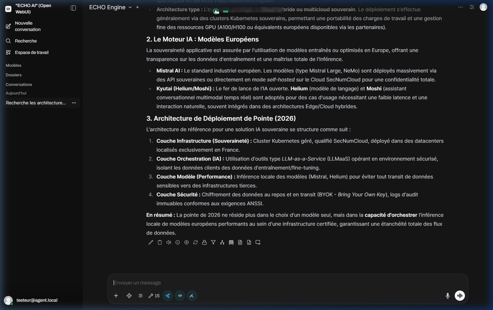
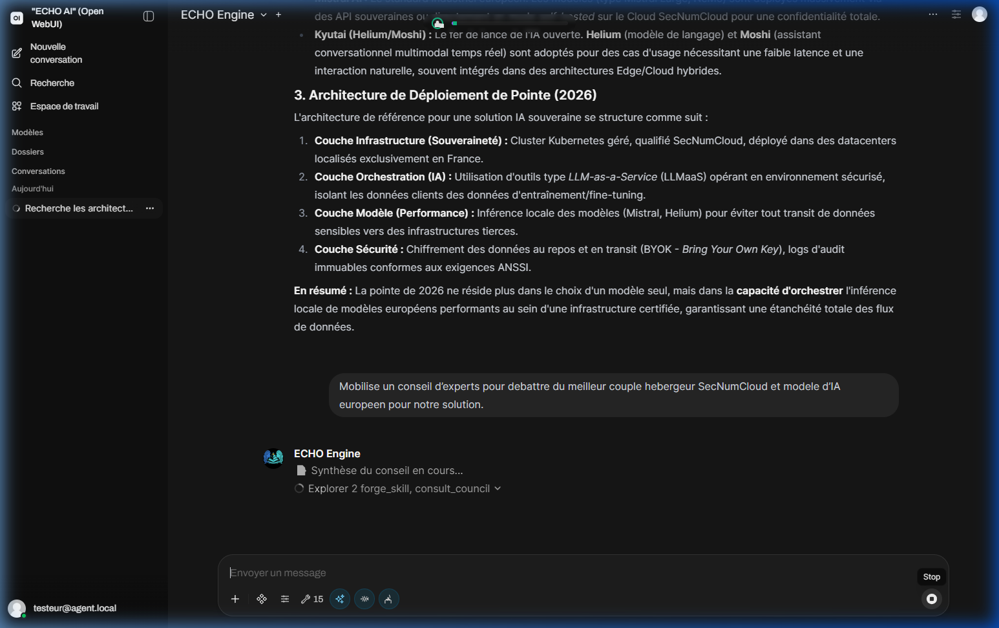
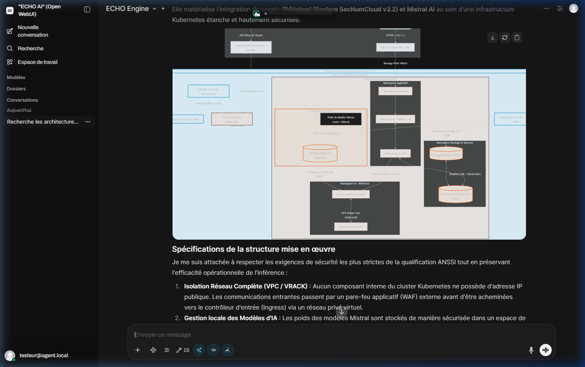
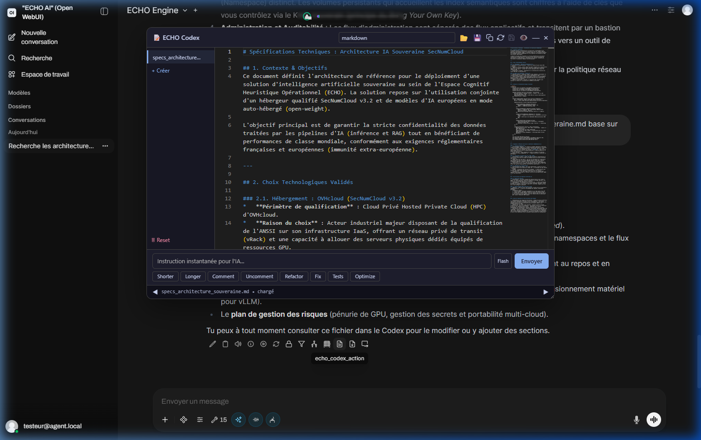

4. Tutoriel Pratique
Cas d'usage concret de bout en bout : Conception d'une architecture Cloud IA qualifiée SecNumCloud en quatre étapes successives.
Phase 1 : Renseignement & Veille Stratégique (Web Intelligence)
Pour amorcer l'étude, l'utilisateur sollicite la capacité de recherche souveraine d'ECHO (SearXNG) sur l'écosystème SecNumCloud et les modèles de langage européens.

Fig 1. État de l'art généré de manière autonome après investigation sur le web.
ECHO analyse les sources récentes et produit une synthèse structurée des acteurs et des hébergeurs qualifiés, en distinguant les couches d'infrastructure, d'orchestration et de sécurité.
Phase 2 : Débat Architectural (Conseil Delphi)
Afin de trancher objectivement sur le couple optimal hébergeur / modèle, l'utilisateur demande à ECHO de convoquer un Conseil d'experts (méthode Delphi) qui confrontent leurs arguments techniques en arrière-plan.

Fig 2. Délibération du Conseil Delphi orchestrant le débat contradictoire entre experts.
Phase 3 : Modélisation Visuelle (Visual Intelligence)
Une architecture complexe gagne à être représentée visuellement. En une consigne, il est demandé à ECHO de projeter un schéma interactif de l'architecture retenue par le conseil.

Fig 3. Composant Visual Intelligence générant directement le diagramme de l'infrastructure SecNumCloud dans la conversation.
Phase 4 : Rédaction des Spécifications (ECHO Codex)
La dernière étape consiste à consigner l'étude dans un livrable versionné. L'utilisateur demande à ECHO de rédiger les spécifications techniques dans l'éditeur ECHO Codex au format Markdown, puis ouvre directement le document en un clic depuis le lien de fichier intégré à la réponse.

Fig 4. L'éditeur intégré ECHO Codex permettant de rédiger, historiser chaque révision et prévisualiser les spécifications.